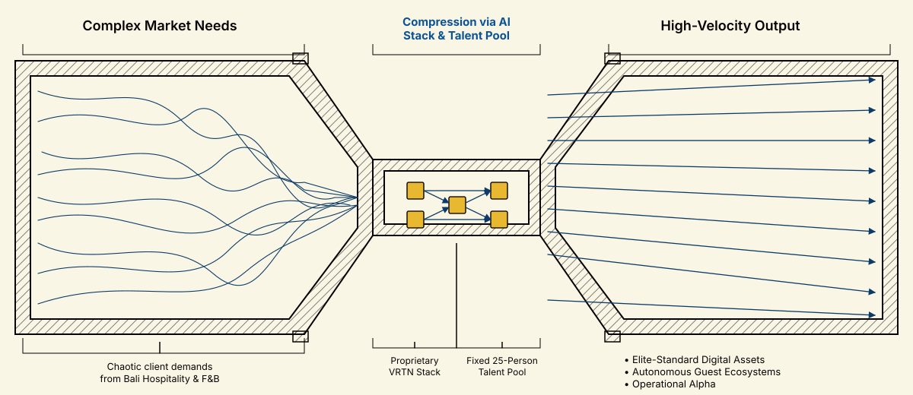

OVERVIEWAbout this report
One document, six workstreams. This is the Gaia Digital Agency operating model and the blueprints for every service it delivers — from the Venturi business thesis down to a live WhatsApp AI running school meal orders today. Every section here is tied to a real repository or a live system. Jump to any part using the nav bar above, or press 1–7.
The Venturi — AI as the tool, not the star

AI on its own is just a tool. Its job here is compression: take the turbulent, chaotic stream of client demand on the left — hospitality, F&B, branding, web, content — and squeeze it through a narrow throat where the proprietary VRTN stack plus a fixed 25-person talent pool compose the work. What exits on the right is laminar: parallel, high-velocity output at elite standard. The point isn't that AI replaces people. It's that AI turns mess into flow so a small team can deliver the volume of a much bigger one — elite-standard digital assets, autonomous guest ecosystems, operational alpha.
Table of contents
bsc.gaiada0.online.Main architecture — GCP · Openclaw · Claude
The shape everything else plugs into. Core = GCP + Claude. Ring 1 = Claude products used by the team. Ring 2 = Ops layer (Python QA + Openclaw). Ring 3 = 7 client service verticals. Support layer = Knowledge Base, MCP connectors, HITL review, feedback loop.
Infra · BigQuery · Looker"] CLAUDE["Claude AI
Central Intelligence Engine"] GCP --- CLAUDE end subgraph RING1["Ring 1 — Claude Product Suite"] CC["Claude Code"] CW["Cowork"] CD["Claude Design"] CH["Claude Chat"] end subgraph RING2["Ring 2 — Operations Layer"] QA["Python QA Engine
7 web tools → Claude actions"] OC["Openclaw
Multi-agent orchestration"] end subgraph RING3["Ring 3 — Service Verticals"] HOSP["Hospitality"] FB["F&B"] WEB["Web Dev"] SEO["SEO"] BRAND["Branding"] ADS["Ads"] SMM["Social Media"] end subgraph SUPPORT["Support & Governance"] KB["Knowledge Base"] MCP["MCP Connectors"] HITL["Human-in-the-Loop"] LOOP["Feedback Loop"] end CLAUDE --> CC & CW & CD & CH CC & CW & CD & CH --> QA & OC OC --> HOSP & FB & WEB & SEO & BRAND & ADS & SMM KB -.-> CLAUDE MCP -.-> CLAUDE HITL -.-> OC RING3 -.-> LOOP LOOP -.-> KB class GCP core class CLAUDE engine class CC,CW,CD,CH tools class QA,OC ops class HOSP,FB,WEB,SEO,BRAND,ADS,SMM services class KB,MCP,LOOP support class HITL governance
2 · 1/2Business Plan — What it isStrategic
Gaia AI is a service-enabled tech platform where AI labour scales on GCP, and humans give it thinking soul. The Venturi thesis: channel broad market demand through a narrow AI throat to produce high-velocity outputs — grow revenue without growing headcount.
Target state: 25 AI-assisted orchestrators delivering the work of 75 producers · RM 1M revenue by Month 18 · 20% IRR · recurring > one-off billable.
Service verticals
Core targets
Guiding principles
Full business plan: docs/ai_business_plan.html · appendix
2 · 2/2Business Plan — Architecture · The VenturiStrategic
Three delivery pipelines share one orchestration core: Web Dev (Figma → Code → GCP), Social Media (platforms ↔ Openclaw ↔ Claude), and the QA Engine (7 tools → Python → Claude actions). The Venturi narrows broad intake into a shared AI throat, then fans out into client outputs.
Design"]:::input --> W2["Claude Code
Build"]:::ai --> W3["Python QA
Scan"]:::check --> W4["GCP
Host"]:::cloud W3 -.fail.-> W2 end subgraph SOCIAL["Social Media Pipeline"] direction LR S1["Platforms
IG · TikTok · LinkedIn
FB · X · YouTube"]:::input -->|"listen"| S2["Openclaw
Agents"]:::check S2 <--> S3["Claude AI
Strategy · Copy"]:::ai S2 --> S4["Human
Approval"]:::human -->|"publish"| S1 end subgraph QAENGINE["QA Engine — 7 Web Tools"] direction LR Q1["Lighthouse · axe-core
SEMrush · OWASP ZAP
Screaming Frog
BrowserStack · GA4"]:::input --> Q2["Python
Orchestrator"]:::check --> Q3["Claude
Action items"]:::ai end
Ring responsibilities
| Ring | Role | Key Assets |
|---|---|---|
| Core | Compute + intelligence substrate | GCP (BigQuery · Looker · IAM · Cloud Run) + Claude |
| Ring 1 | Claude product surfaces | Claude Code · Cowork · Claude Design · Claude Chat |
| Ring 2 | Reliability + orchestration | Python QA engine + Openclaw multi-agent runtime |
| Ring 3 | Client-facing verticals | Hospitality · F&B · Web Dev · SEO · Branding · Ads · Social Media |
| Support | Shared memory + connectors + review | KB · Vector DB · MCP · HITL gates · feedback loop |
3 · 1/2Figma → Site + QA Automation — What it isNo Agent
A highly-automated, one-shot build pipeline that takes a Figma file and turns it into a running production site. Gets to ~85% ready automatically; the last 15% (content polish, edge cases, copy tune) is finished by a human developer. No agent is involved — this is pure tooling + Claude Code + Python QA.
Flow: Figma → MCP → Site → QA → 85% ready → Manual finish → GCP.
Flow chain
Components
Value metrics
Full playbook: figma_to_site_automation.html · figma_to_site_playbook_v2.html (RH Properties) · QA details: qa_automation.html
3 · 2/2Figma → Site + QA — ArchitectureNo Agent
Linear pipeline. No Openclaw agent in the loop. Claude Code does the build (invoked by a developer), Python QA scans the artifact, the developer finishes the last 15% by hand, then deploys to GCP.
Design source"]:::design --> MCP["Figma MCP
tokens + frames"]:::design MCP --> CC["Claude Code
(developer-invoked)
generates code"]:::ai CC --> TB["Templatebase (VRTPN)
Vite SSR · React 19 · Tailwind v4
+ Payload CMS"]:::build TB --> QA["Python QA Engine
Lighthouse · axe · ZAP
SEMrush · Screaming Frog
BrowserStack · GA4"]:::check QA -.fail.-> CC QA --> M85["85% READY
Build + QA passes"]:::milestone M85 --> HUM["Human Finisher
content polish · edge cases
copy · last-mile QA"]:::human HUM --> GCP["GCP Hosting
Cloud Run · Postgres · CDN"]:::host
Pipeline responsibilities
| Stage | Tool | Owns |
|---|---|---|
| Figma | Figma file | Design source of truth |
| MCP | Figma MCP server | Exposes tokens + frame structures to tooling |
| Build | Claude Code + Templatebase | Generates code into packages/cms (Payload + Next 16) and packages/web (Vite SSR + React 19 + Tailwind v4) |
| QA | Python orchestrator + 7 web tools | Performance, accessibility, SEO, security, crawlability, cross-browser, analytics checks → Claude produces action items |
| 85% milestone | — | Artifact is buildable, tested, hosted in staging, awaiting human finish |
| Human finisher | Developer | Content polish, copy, visual edge cases, accessibility nits, last-mile decisions |
| Host | GCP | Cloud Run · Postgres · CDN · revalidation |
4 · 1/2Full Service (Templatebase + Victor) — What it isAgent Active
Same Templatebase pipeline as Part 3, but wrapped by Victor — the Openclaw multi-agent orchestrator (openclaw_var). Turns a one-shot build into an ongoing managed service: blog posts, CMS updates, content ops, email, calendar, file operations — all delegated to specialist agents under Victor's control.
Victor (main) · openclaw_var · gateway :19289 — DeepSeek primary, Gemini fallback. Channels: Telegram + Mission Control. Delegates to 7 specialist agents.
Victor's agent roster
Full playbook: openclaw_website_playbook.html (Victor × templategen)
What this turns "Figma→Site" into
| Axis | Part 3 (no agent) | Part 4 (Victor) |
|---|---|---|
| Delivery | One-shot build | Ongoing managed service |
| Human role | Developer finisher | HITL reviewer / supervisor |
| Content ops | Manual | Agent (web-manager + copywriter) |
| Channel | Dev tool | Telegram / Mission Control |
| Fallback LLMs | Claude Code only | DeepSeek + Gemini fallback on Openclaw |
4 · 2/2Full Service — ArchitectureAgent Active
Victor receives user intent on Telegram / Mission Control, delegates to the right specialist agent, which then drives the underlying build + CMS + publish pipeline.
Telegram / Mission Control"]:::user --> VIC["Victor (main)
openclaw_var :19289
DeepSeek · Gemini fallback"]:::ai VIC --> WM["web-manager
CMS + blog"]:::ai VIC --> CW["copywriter"]:::ai VIC --> WR["writer
email + letters"]:::ai VIC --> BK["booking
calendar"]:::ai VIC --> DM["drive-manager"]:::ai VIC --> AN["analyst"]:::ai VIC --> CC["Claude Code
build + refactor"]:::build CC --> TB["Templatebase (VRTPN)
Vite SSR · React 19 · Tailwind v4"]:::build WM --> PAY["Payload CMS
Next 16 admin + REST/GraphQL"]:::cms TB <--> PAY TB --> QA["Python QA Engine
7 web tools"]:::check QA -.fail.-> CC QA --> REV["HITL Gate
reviewer / supervisor"]:::human REV --> GCP["GCP Hosting
Cloud Run · Postgres · CDN"]:::host
Component responsibilities
| Component | Repo / Runtime | Owns |
|---|---|---|
| Victor (main) | openclaw_var · agents/main · :19289 | Intent routing from Telegram / Mission Control, delegation, reply composition |
| web-manager | workspace-web-manager | Publishes / updates content on templategen.gaiada.online |
| copywriter · writer · booking · drive-manager · analyst | workspace-* | Each owns a domain slice (content · email · calendar · Drive · doc analysis) |
| Claude Code | Anthropic | Code generation/refactor into Templatebase packages |
| Templatebase | web_templatebase (VRTPN) | Vite SSR + React 19 + Tailwind v4 + Payload CMS + Node + Postgres |
| Python QA | QA automation | 7-tool scan; Claude produces action items on failure |
| GCP | Cloud Run · Postgres · CDN | Production runtime + revalidation + preview |
5 · PlannedSocial Media Automation (SOMA)Agent not yet built
Planned 5-platform orchestration layer that will extend Openclaw with platform-specialist agents. The agent is not yet built — this section is the spec for what comes next. Content drafting, interaction handling, publishing and monitoring will all run through the same Venturi-throat pattern with humans approving every publish.
Core rule: OpenClaw performs every publish — never the AI direct. GDA retains human approval over all AI-generated content.
Brief · Voice · Calendar · Media"]:::intake subgraph THROAT["VENTURI THROAT — Openclaw + Claude Sonnet 4.6"] CA["Content Agent"]:::ai IA["Interaction Agent"]:::ai BC["Brand Compliance Checker"]:::ai CP["Content Planner"]:::ai end Q[("Content Queue (Postgres)
draft → brand_check → pending_review
→ approved → scheduled → publishing → published")]:::db PORTAL["GDA Review Portal
Next.js + NestJS
Queue · Approve · Media · Calendar · Inbox"]:::portal PUB["OpenClaw Publisher"]:::ai subgraph PLATS["Platforms"] IG["Instagram"]:::platform FB["Facebook"]:::platform YT["YouTube"]:::platform X["X"]:::platform TT["TikTok"]:::platform end MON["Monitoring
performance · errors · audit"]:::monitor IN --> CA & IA & BC & CP CA & IA & BC & CP --> Q Q <--> PORTAL PORTAL -- approved --> PUB PUB --> IG & FB & YT & X & TT IG & FB & YT & X & TT --> MON MON -.new interactions.-> IA MON -.performance.-> CP
Platforms & agents
Build status
| Component | Status | Blocker / Next step |
|---|---|---|
| Openclaw agents | Planned | Adapt existing Openclaw pattern (Victor / Brian) to platform-specialist agents |
| Review Portal (Next.js + NestJS) | Planned | Reuse existing GDA SaaS stack (Next + NestJS + PG + Tailwind + JWT + Drizzle) |
| Platform adapters | Planned | Each wraps a platform's official API; normalize to one publish interface |
| Claude prompt-cache layer | Planned | Cache brand-voice + client-brief system prompts |
Full plan: docs/socmed_plan_01.md
6 · LiveFull Service POC (Schoolcatering + Brian)Live
Proof-of-concept showing Openclaw running a full-working service. Brian (openclaw_bsc) is the public-facing WhatsApp AI operator; Orders is the internal execution agent that talks to the Schoolcatering API. Families register, order meals, cancel, and get reminders — entirely through WhatsApp.
Live runtime: WhatsApp → Brian (gateway :18789 ongda-ai01) → Orders → BSC APIhttps://schoolcatering.gaiada1.online/api/v1. Public URL:bsc.gaiada0.online.
WhatsApp"]:::user --> WAG["WhatsApp Gateway
bsc.gaiada0.online"]:::gate WAG --> BRI["Brian (main)
openclaw-bsc :18789"]:::agent BRI -->|sessions_spawn| ORD["Orders
internal exec · workspace-bsc"]:::agent ORD --> API["BSC API
schoolcatering.gaiada1.online/api/v1
(NestJS)"]:::app API --> DB[("PostgreSQL
families · children · orders
menus · schools")]:::db API --> WEB["BSC Web (Next.js)
admin · kitchen · delivery"]:::app subgraph RUNTIME["Runtime — gda-ai01 + gda-ce01 (GCP)"] PM2["PM2 · Nginx · GCS"]:::infra end API --- PM2 WEB --- PM2 ORD -.state.-> MEM[("/opt/.openclaw-bsc/memory
registration_PHONE.json")]:::db
Brian's skills & scope
Outcomes validated
Full playbook: specialty_service_playbook.html (Brian × Blossom)
Repos:
openclaw_bsc
·
blossom_schoolcatering
7 · AppendixChange Management · Timeline · Principles · References
Dual-Track Transformation · Integrated Timeline
30 producers · Billable hours"]:::today subgraph PEOPLE["PEOPLE TRACK"] P1["Awareness"]:::people --> P2["AI Academy"]:::people --> P3["Role Transition"]:::people --> P4["New KPIs"]:::people end subgraph TECH["IT TRACK"] T1["GCP + IAM"]:::tech --> T2["Multi-LLM + MCP"]:::tech --> T3["Dual Build Tracks"]:::tech --> T4["Sunset Legacy"]:::tech end G1{{"Gate 1
Launch Ready"}}:::gate G2{{"Gate 2
Pilots Validated"}}:::gate G3{{"Gate 3
Scale Ready"}}:::gate PILOTS["Bali Pilots
Hosp + F&B"]:::commercial BROAD["Web Dev + SEO live
Managed services"]:::commercial SCALE["Regional expansion
Indonesia + Australia"]:::commercial FUTURE["VENTURI STATE
25 Orchestrators · RM 1M · 20% IRR"]:::future TODAY --> PEOPLE & TECH PEOPLE --> G1 TECH --> G1 G1 --> PILOTS --> G2 --> BROAD --> G3 --> SCALE --> FUTURE
Role Evolution & Current → Target IT
| People: From (Producer) | To (Orchestrator) |
|---|---|
| Content Writer | Content Orchestrator + Brand Guardian |
| Web Developer | AI-Assisted Engineer + Solution Architect |
| SEO Specialist | SEO Strategist + QA Reviewer |
| Designer | Creative Director + Prompt Curator |
| Account Manager | Client Success + Managed-Service Lead |
| Social Media Exec | Community Strategist + Agent Supervisor |
| IT Layer | Today | Venturi Target |
|---|---|---|
| AI | Ad-hoc ChatGPT + Gemini | Claude (primary) + OpenAI + Gemini + DeepSeek |
| Infra | Mixed hosting | GCP-led hybrid |
| Build | Per-project tooling | Templatebase (Vite+React+Tailwind+Payload) + SaaS (Next/NestJS) |
| QA | Manual spreadsheets | Python engine + 7 web tools |
| Knowledge | Scattered | Central KB + Vector DB + MCP |
| Analytics | Reports on request | BigQuery + Looker dashboards |
Governing Principles
| Principle | What It Means |
|---|---|
| Venturi Compression | Broad demand → narrow AI throat → high-velocity output |
| No-Manpower-Growth | Scale revenue without scaling headcount; redeploy, don't replace |
| Revenue Quality > Volume | Recurring + managed beats one-off billable |
| Coexist Before Cutover | Pilots on new stack; legacy runs until Gate 2 |
| Single Source of Truth | KB + prompt library treated as a product |
| Human Judgment at the Edges | AI middle, humans at intake + approval — HITL gates everywhere |
Reference Documents
- docs/ai_business_plan.html
- docs/ai_business_plan_appendix.html
- docs/figma_to_site_automation.html
- docs/figma_to_site_playbook_v2.html
- docs/openclaw_website_playbook.html
- docs/specialty_service_playbook.html
- docs/qa_automation.html
- docs/socmed_plan_01.md
- docs/gaia_plans.md
- docs/venturi_02.png
- GitHub · gaia_plans
- GitHub · web_templatebase
- GitHub · openclaw_var (Victor)
- GitHub · openclaw_bsc (Brian)
- GitHub · blossom_schoolcatering
{kind=link}